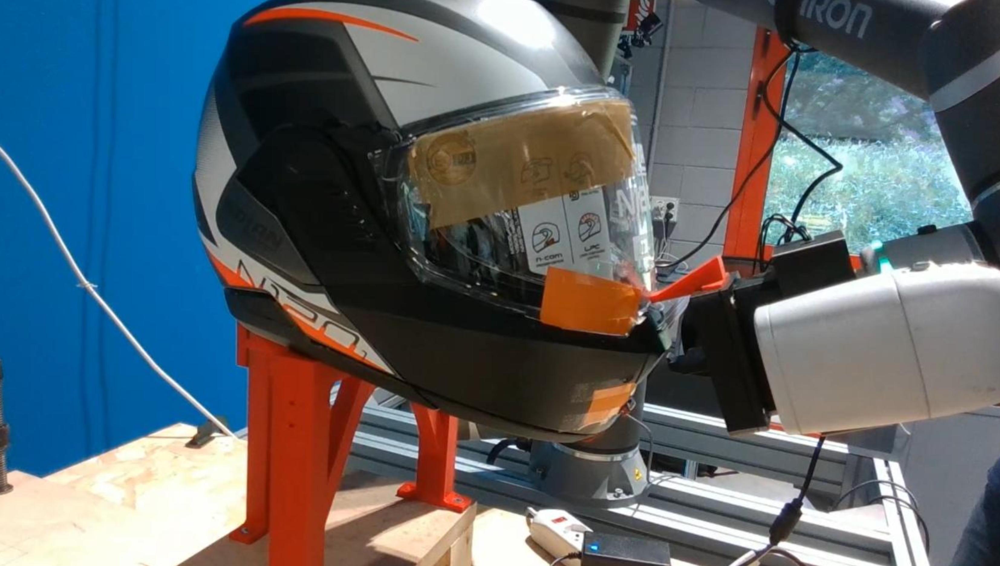
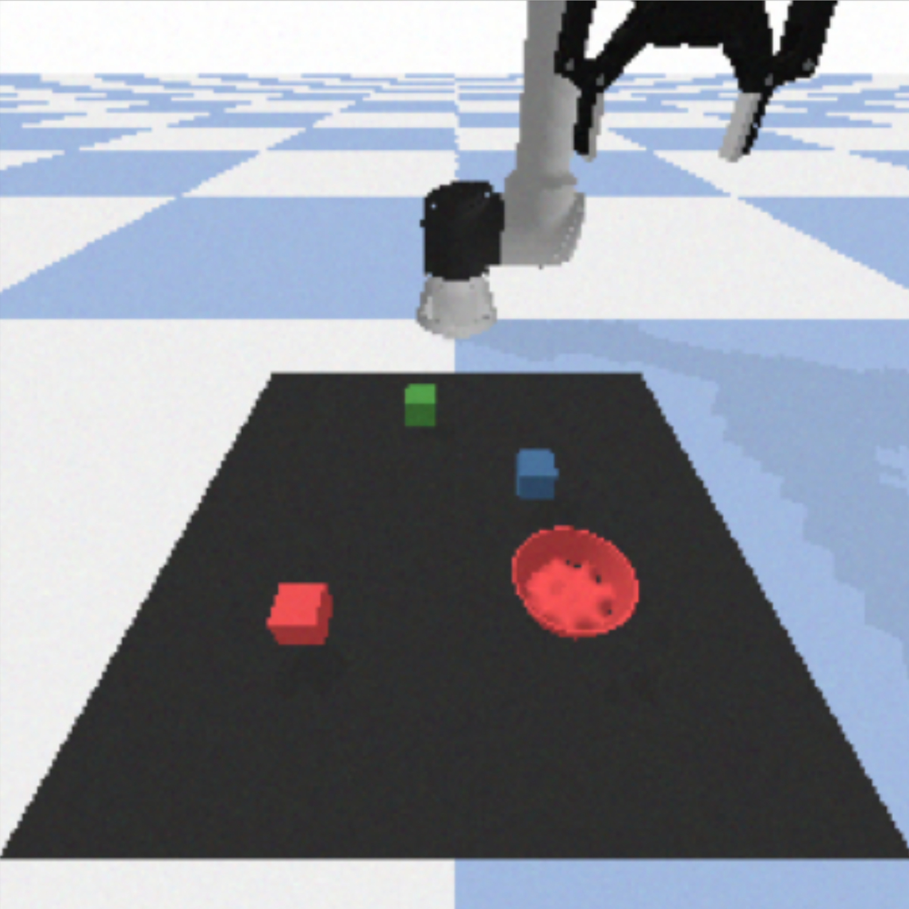
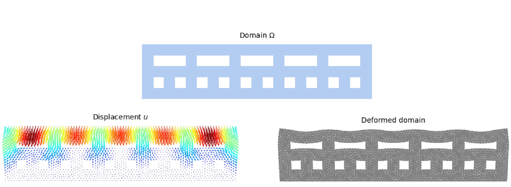

Highlighted Projects
A selection of my work in mechanisms, robotics, and simulation.

Mechanism Design & Robotics
Designed and 3D printed an electrically actuated end-effector to manipulate a modular motorcycle helmet. Programmed robot path planning with autonomous task verification via camera and torque feedback.
View Project
SayCan Framework for Pick & Place
Implemented a SayCan framework for a robotic arm. Combined LLMs for semantic scoring with ViLD and CLIPort for visual affordance to enable complex language-guided robotic manipulation tasks.
View Project
Operational Modal Analysis of a Rail Wheel
Extracted modal parameters and reconstructed mode shapes from real experimental vibration data of a suspended rail wheel using FRF curve fitting.
View Project
FEA of a Harbour Crane
Developed a custom Finite Element model for a steel harbour crane to evaluate natural frequencies, FRFs, and dynamic response under moving loads.
View Project
Operational Modal Analysis
Reconstructed Modal Parameters and FRFs of tie rods from natural excitation data using FDD algorithm. Isolated parameter variations due to structural damage from thermal disturbances.
View Project
Playground Safety: Material Design (ROM)
Implemented Reduced Order Models (POD-NN & DL-ROM) to approximate the static elastic response of a playground floor structure under load.
View Project
Stunt Training Facility: Floor Design (ROM)
Developed time-dependent surrogate models using Deep Learning based ROMs to predict dynamic floor displacement during athlete impact.
View Project
Bayesian Optimization for Robot Control Tuning
Explored advanced control strategies by tuning robot controllers using Bayesian Optimization algorithms to improve trajectory tracking and system stability.
View Project